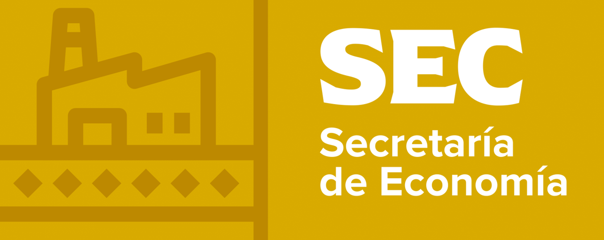

El Premio Estatal de Excelencia Operacional es el máximo reconocimiento empresarial y organizacional que otorga el Gobierno del Estado de Coahuila de Zaragoza, cuyo objetivo es destacar las mejores prácticas operativas de acuerdo con el modelo de excelencia definido en la convocatoria.
Regístrate aquí
Empresas u organizaciones del Sector Privado (Industrias, Agroindustrias, Comercios y Prestadores de Servicios), del Sector Público (Dependencias Estatales y Municipales) y del Sector Educativo (Instituciones Educativas Públicas y Privadas de los niveles Básico, Medio y Superior), con domicilio en el Estado de Coahuila de Zaragoza, que tengan un Sistema de Excelencia Operacional y de Gestión de Calidad y que dispongan de procesos establecidos orientados hacia la mejora continua.
El proceso se desarrolla en siete etapas, con las fechas y los formatos correspondientes para 2026.
| Etapa | Descripción | Formatos |
|---|---|---|
| 1 · Inscripción | Dividida en dos fases: 1) Registro y 2) Reporte Inicial, del 09 de marzo al 03 de abril de 2026. El Registro es la fase mediante la cual los interesados informan su intención de inscribirse, proporcionando sus datos generales. El Reporte Inicial es la evaluación preliminar que considera los 8 criterios definidos para el Premio Estatal de Excelencia Operacional. | |
| 2 · Selección | Se informa al participante el resultado de su empresa u organización de acuerdo con los criterios de la Etapa 1, fase 2 (Reporte Inicial), para que considere el avance a las siguientes etapas. El resultado se entrega cuando la empresa concluye la información solicitada y la envía por medio de la plataforma electrónica, del 06 al 17 de abril de 2026. | — |
| 3 · Revisión de Perfil | Cada documentación de la empresa inscrita es revisada por los evaluadores del Premio, quienes analizan a profundidad la propuesta de cada postulante. Se lleva a cabo del 20 de abril al 08 de mayo de 2026. | |
| 4 · Evaluación Integral | Evaluación de las prácticas de la organización para ejecutar sus estrategias y dar respuesta a los retos de su entorno, a cargo de los evaluadores del Premio. Se lleva a cabo del 11 de mayo al 19 de junio de 2026. | |
| 5 · Evaluación de Campo | Se visitan las instalaciones de la empresa u organización y se realizan entrevistas para profundizar en los retos y prioridades estratégicas, la eficiencia en la ejecución y su relación con los resultados, en sincronía con la cultura de calidad e innovación. Se lleva a cabo del 22 de junio al 07 de agosto de 2026. | |
| 6 · Designación de Ganadores | Selección definitiva e inapelable de las empresas u organizaciones reconocidas con el Premio, mediante voto de los miembros del Consejo Estatal de Competitividad, con base en los méritos y resultados que presentan los evaluadores. Se lleva a cabo del 10 al 14 de agosto de 2026. | — |
| 7 · Premiación | La ceremonia de premiación se lleva a cabo entre el 31 de agosto y el 11 de septiembre de 2026. | — |